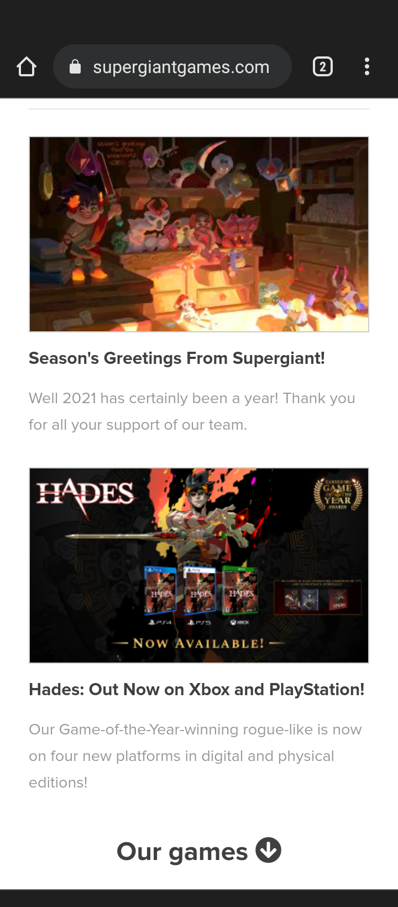
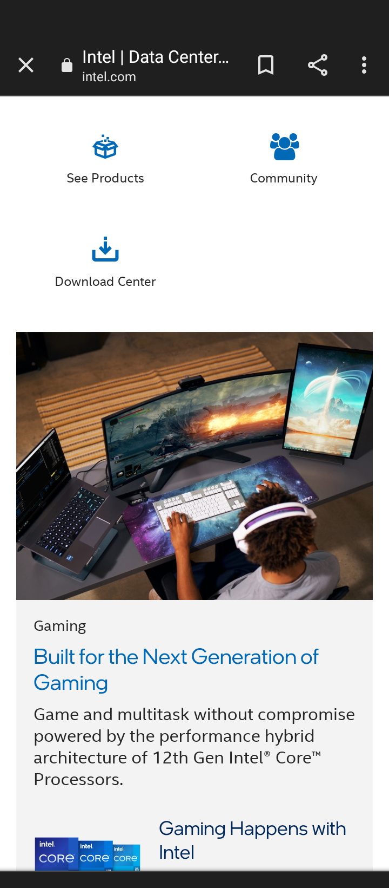

Design Principles Document
Carter Thompson
White Space
Supergiant Games
https://supergiantgames.com This site uses whitespace to emphasize and group elements. The space between a given image and its text is less than the space between the text and the next article. Everything is spaced cleanly within the viewport to reduce clutter.
Contrast
Intel
https://intel.com This site uses contrast to highlight particular elements on the page and catch the viewer's eye. The color blue is used to draw attention to the most prioritized elements - the buttons and headings are highlighted in blue. Across their homepage, darker images are used to contrast against the white background and provide a clear breakdown of ideas.
Rule of Thirds
Company Name
https://byui.eduWhile mobile websites provide little horizontal space to work with, the rule of threes can still be demonstrated vertically. BYUI's homepage is spaced such that only three of their articles' images can be seen on the screen at a time. This is good for the reader as it doesn't clutter the page with too much info all at once.